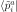
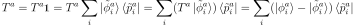
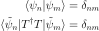

Projector Augmented-Wave Method (PAW)¶
We can use the Density Functional Theory (DFT) to reduce the many body problem to solve a single particle Schrödinger equation:
The wavefunctions contain cusps (and are oscillatory around each nucleus), also one needs to solve this for all core states.
Next step is to use the known behavior around each atom and take advantage of the known physics somehow. There are two general approaches, either one can incorporate the known physic in the basis (for example the partition of unity in the finite element method), or into the equations. PAW method uses the latter approach.
Projectors, Augmentation Spheres and Smooth Wavefunctions¶
We introduce smooth wavefunctions (we’ll use “~” for smooth functions) by
a linear transformation operator  :
:

We construct augmentation spheres around each
atom  (one can imagine a muffin-tin), where is a cut-off radius,
is the atom index,
(one can imagine a muffin-tin), where is a cut-off radius,
is the atom index,  is the atom position.
is the atom position.
We write as:
where only acts in the augmentation sphere. We choose a complete basis
 (also called partial waves) inside the sphere. The smooth
partial waves can be obtained using the operator:
(also called partial waves) inside the sphere. The smooth
partial waves can be obtained using the operator:
Because only acts in the sphere, it follows that

outside the sphere (i.e. for ). We can now expand the smooth wavefunctions using the partial waves basis:
(1)¶
inside the augmentation sphere. Multiplying both sides by :
(2)¶
So both smooth and non-smooth wavefunctions have the same expansion
coefficients  . We choose smooth projector functions
satisfying the following
orthogonality and completeness relations inside the augmentation spheres (no
restrictions are imposed outside the spheres, so we just define
):
. We choose smooth projector functions
satisfying the following
orthogonality and completeness relations inside the augmentation spheres (no
restrictions are imposed outside the spheres, so we just define
):
(3)¶
then multiplying (1) by  and using (3):

(4)¶
Let’s write using the projectors:

Note that the right hand side is zero outside the augmentation sphere. Thus

In other words, the transformation operator is completely defined using the
smooth and non-smooth partial waves and the projector functions. In terms of
the wavefunction:
In words, the wavefunction can be decomposed as the sum of the smooth wavefunction and sum over atoms (centers), at each atom we have “1-center all electron” minus “1-center pseudo”.
The projection functions can always be written as
where  is any set of linearly independent functions.
is any set of linearly independent functions.
Note: the  above means all states of interest — either all states, or only
the valence states.
above means all states of interest — either all states, or only
the valence states.
Frozen Core Approximation¶
One can either calculate all electrons in the eigenproblem, or only calculate the valence electrons and treat the core states separately. The simplest option is to introduce a frozen core approximation, where
for all core states , here runs over  , where is the
atom index and
, where is the
atom index and  are the core states of an atom. This approximation
can also be relaxed in various ways.
are the core states of an atom. This approximation
can also be relaxed in various ways.

 is:
is: are not strictly localized withing
the augmentation sphere.
are not strictly localized withing
the augmentation sphere.Kohn Sham Equations¶
We multiply the original equations by from the left and introduce the smooth wavefunctions:
The orthogonality of wavefunctions is:

The overlap operator  can be written as:
can be written as:
where
The transformed Hamiltonian is
where